每一样都按一下就到
十来样常用的小工具，各有各的快捷键，弹出时不抢你正在用的 App。下面每一节标着它在哪个平台上有；标着「插件」的，在设置里添加了才出现。
主界面与菜单栏
MacWindows
点一下菜单栏里的猫（Windows 上是托盘图标），全部功能一格一格摆着，点一下就用。
- 左键是主界面，右键是菜单
- 只放点一下就用的动作；添加了的插件收在最后一节，有关着的功能时最下面一行能直接去管理
- 菜单栏图标可以换成彩色的，也可以整个藏起来，快捷键照常能用
- Mac 版在主界面直接打字，就转到启动器里搜
- 第一次打开有欢迎引导：先挑要用的功能，再只给挑了的功能要的权限、试一下快捷键；关于页里能重看
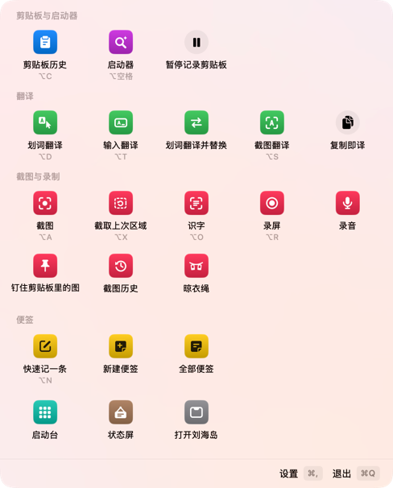
剪贴板历史 ⌥C
MacWindows
复制过的文字（保留格式）、图片和文件都记下来，重复的只挪到最前面。
- ↩ 粘回原来的 App，⌥↩ 粘成纯文本，⌘1–9 直接粘第几条；多选后合并粘贴；删了能 ⌘Z 撤回
- 选中哪条就原地展开预览：代码带行号和着色，颜色给出 HEX / RGB / HSL，链接带标题和头图，⌘Y 放大看
- 正文、图片里的字（本机识别）、文件路径、备注、来源 App 都能搜；Tab 按类型、来源、收藏夹筛选
- 收藏夹、片段和备注；片段能带日期、时间、光标位置、前几条剪贴板这类占位符；收藏和片段不会被自动清理
- 文件 ⌘O 打开、⌘R 在访达中显示，⌘T 翻译这一条，图片和文字都能钉到屏幕上，条目直接拖进别的 App
- 面板出现在屏幕上方、跟着鼠标，或停在上次拖到的地方；拖边改大小
- 跳过密码管理器和带隐私标记的内容，拦下看着像密钥、银行卡号的文本；能排除 App、暂停记录，退出或锁屏时清空
- Mac 版另有：片段的日期时间能偏移、自定格式，粘贴前弹框填空；图文混排的一段粘回去图片还在；暂停记录时菜单栏图标挂一个暂停角标；图片条目直接显示成一张小图、选中时原地放大，搜索框空着时按空格放大预览
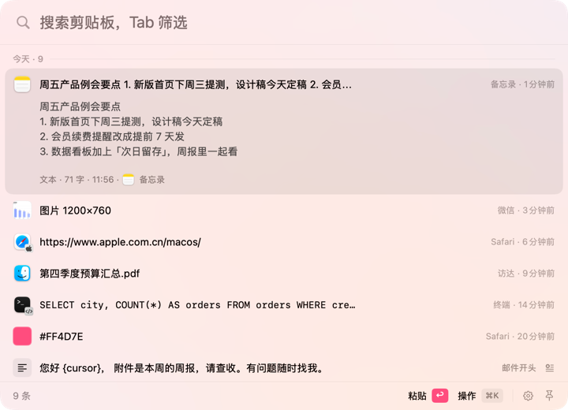
启动器 ⌥Space
MacWindows
一个搜索框，打开 App、找文件、算算数、搜网页。
- 搜 App：中文名、英文名、拼音全拼和首字母都认（「hdjsq」就是活动监视器），按使用频率排，收藏的排最前；Mac 版同一个字选过一次下次就排第一，iPad App 也能用中文名搜到
- 搜文件：「open 文件名」打开，「find 文件名」在访达里选中；⌘Y 快速查看，⌘K 换个 App 打开
- 计算和换算：四则运算、百分比、函数；「10 km to mi」「30 摄氏度 转 华氏度」「255 in hex」，汇率「100 usd」「100美元转人民币」，↩ 把结果粘出去
- 脚本命令：脚本文件夹里的每个脚本就是一条命令，能带参数，结果拷贝、粘贴、显示全文或列成列表；Mac 版自带 8 个（时间戳、Base64、JSON 格式化、UUID……），AI 写好的脚本复制过来就能用
- 内置命令和脚本都能改要打的词、关掉不用的，每条命令还能设一个快捷键；Mac 版的 App 也能起别名（给微信填「wx」）
- 系统命令：锁屏、睡眠、清空废纸篓、静音；退出或强制退出 App、推出磁盘；「kill」结束进程，「port 3000」看端口被谁占着，「ip」看本机地址
- 搜「蓝牙」「显示器」直达那一页系统设置；「g 关键词」搜网页，预置十几个常用网站，也能自己加
- 本机浏览器的书签和历史，带网站图标；输网址或 ~/ 开头的路径直接打开
- Mac 版另有：运行「快捷指令」App 里的快捷指令；中文、英文界面里，中英文名都能搜到；输入 / 或 ~ 开头的路径直接列出文件夹里的东西，Tab 进去、⇧Tab 回上一级；添加 App 快捷键插件后能搜前台 App 的菜单项
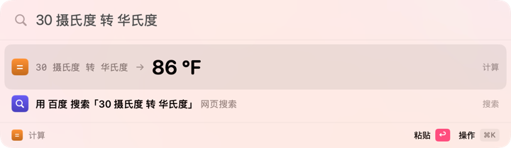
翻译 ⌥D
MacWindows
选中就翻，不用切窗口。输入翻译 ⌥T、截图翻译 ⌥S，也能打开复制即译。
- 划词翻译：在任何 App 里选中文字按快捷键，浮窗出现在屏幕上方（也能改成跟着鼠标）；取不到选区时自动改用拷贝取词，用完把剪贴板还原
- 截图翻译：框一块屏幕，在本机认出字再翻译；译文也能直接盖回截图上
- 内置服务开箱即用，系统翻译和有道词典也不用密钥；另有百度、有道、Google、DeepL、微软、火山、腾讯，以及各家大模型，填好密钥就能用；几家一起出结果，大模型边生成边显示；设置里标出免费的服务，折叠起来的服务点开才翻、不耗额度
- 查单个词给词典释义，英文单词放真人发音；译文能直接替换原文，也能设一个快捷键一按就替换
- 翻译历史和生词本：能搜、能收藏，导出成表格或背单词卡片
- 目标语言选「自动」时在你的第一、第二语言之间互译；能朗读、自动复制译文
- Mac 版能翻 30 种语言（越南语、泰语、阿拉伯语、荷兰语、波兰语……），很长的文字按段切开依次翻，不会翻到一半就断；大模型能讲解外文句子（列出重点词和句型），每个大模型服务能写附加要求，朗读能放慢、加快
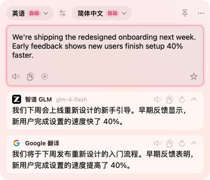
截图 ⌥A
MacWindows
截下来，标清楚，再送出去。截取上次的区域 ⌥X，识字 ⌥O。
- 先冻结屏幕再框选，悬停自动认出窗口，吸附窗口边和屏幕边；尺寸能直接输，比例能锁
- 还能认出窗口里的按钮、输入框、侧栏、文件名、链接，滚轮往里钻或退出来；Mac 版也能认网页里的元素（默认关，在设置里打开）
- 放大镜取色，按 C 复制光标处的色值
- 十种标注：矩形、椭圆、箭头（能弯、能双头）、直线、画笔、荧光笔、文字（能调字号）、序号、打码、聚光灯，数字键切换；画完还能挪、拖角和边改大小、能撤销；吸管从截图里取色
- 打码是真正的模糊，也能换成像素方块；「自动」一下盖住手机号、邮箱、银行卡号和身份证号
- ↩ 拷贝，⌘S 存储，钉在屏幕上当参考；识字（也认二维码）、截图翻译；截图时的快捷键在工具栏上右键就能改
- 长截图：框好后按 S，在选区里往下滚就自动拼接，按空格自动滚（速度能调）；拼完照样能标注
- 截图历史：截图、长截图、钉过的图、录屏录音都收在一处，能搜能筛；双击一张接着改标注
- Mac 版另有：钉图上的字能直接拖选、拷贝、翻译；标注里能裁剪；截完图在角落缩略图上直接改标注；能带上鼠标指针、隐藏桌面图标；框选时的提示和放大镜能关；截出来的图带圆角、四角透明（圆角能调，也能改回直角），单击整扇窗口截下时带窗口自己的圆角和阴影；延时截图数 5 或 10 秒再框选，能截到工具提示
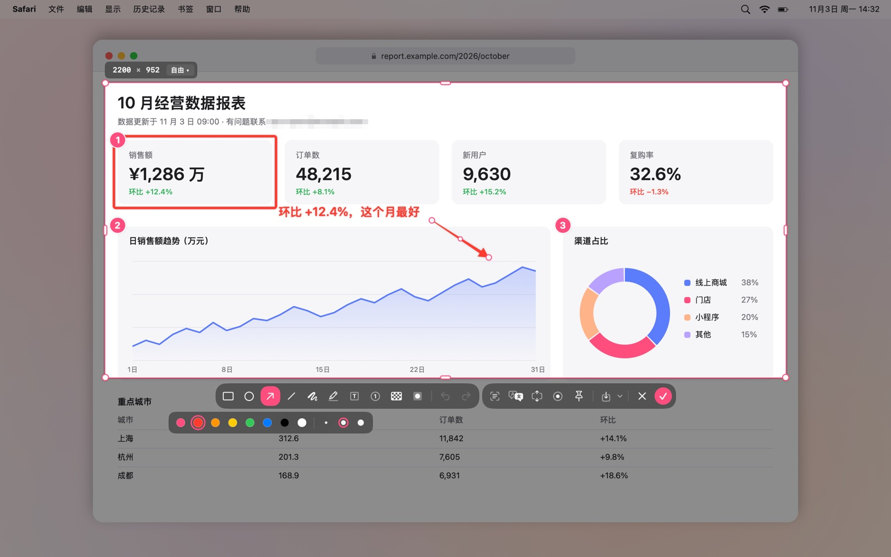
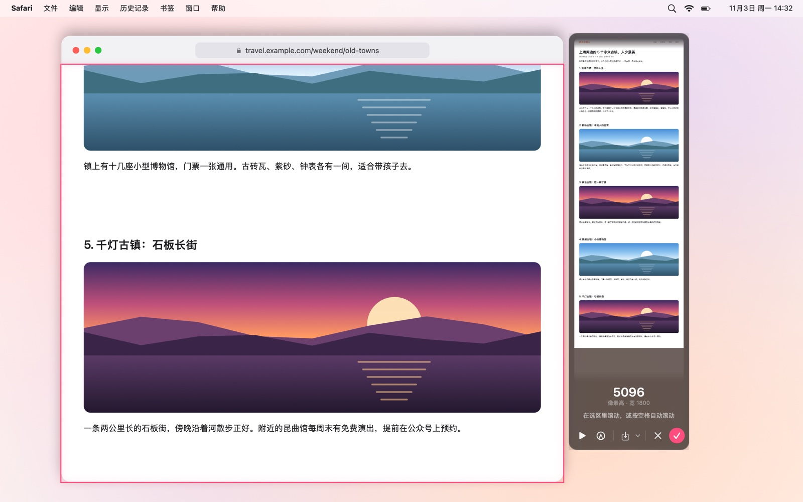
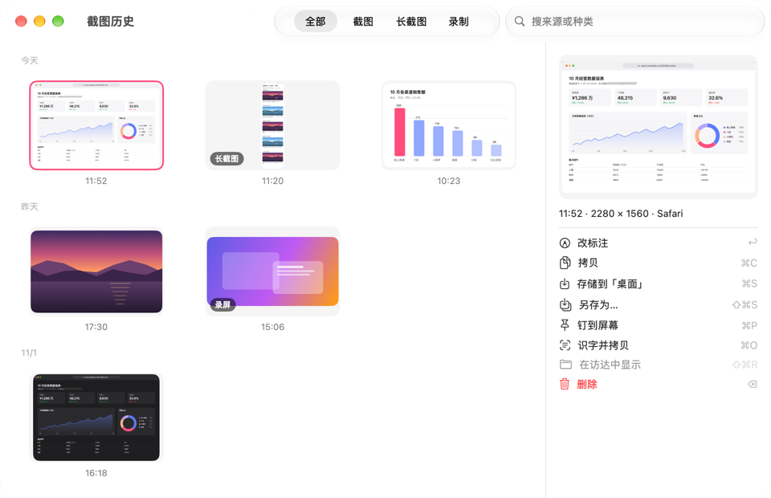
录屏与录音 ⌥R
MacWindows
和截图一样框一块区域或整块屏幕，↩ 开始，默认倒数 3 秒。
- 录系统声音和麦克风（Mac 版能选用哪个麦克风），能显示点按和按下的键
- 菜单栏里计时，再按一次快捷键停止并保存
- 录音先出控制条：选好来源（麦克风、系统声音或两者）再开始，看得到电平，存成 m4a
- 录完的视频卡停在屏幕角落：拷贝、拖走、转成 GIF 或压缩
- 帧率、清晰度、编码格式都能在设置里选
便签 ⌥N
Mac · 插件Windows
贴在屏幕边上的便签，想到什么随手记一条。
- 快速记一条：在任何 App 里按 ⌥N 弹出小框，记成新便签，或者接在某一条后面
- 屏幕边缘的那叠：药丸贴在屏幕边上，鼠标靠过去扇出标签，点开就写，写完回到原来的 App
- 全部便签：便签墙和列表两种看法，能搜索、归档、固定；删掉的留 30 天，能放回
- 浮在屏幕上：把便签拖出来钉在桌面上，重启后回到原处
- 正文是纯文本加 Markdown 样式：标题、列表、引用、代码块、链接；五种任务状态、文字颜色、行内图片，便签里查找、撤销
- 整个或单条导出成 Markdown，再导回来；和剪贴板、启动器、划词翻译打通；能在几台 Mac 之间同步
- Mac 版另有：能多选整批删除、归档、换色，一次撤销；按最近修改排；粘网页、文稿时保留链接、粗体、标题、列表和代码；快速记一条能贴图；屏幕边缘那一列能用快捷键叫出来
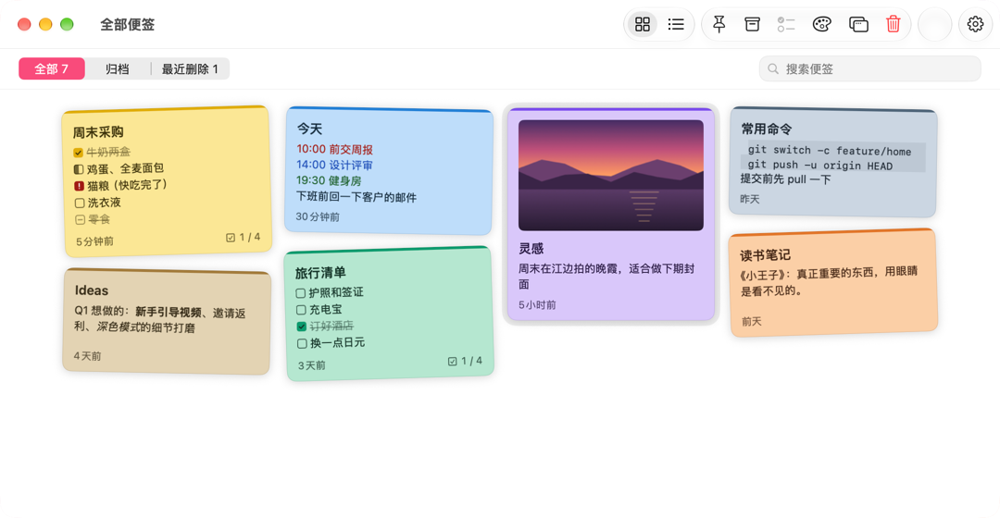
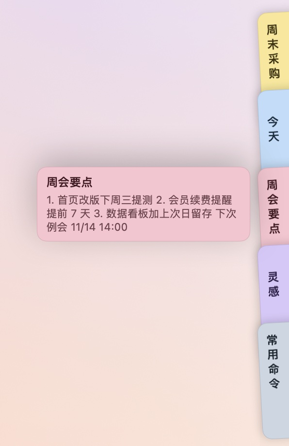
提醒
Mac · 插件Windows
设好时间，到点挂在刘海岛上，点「知道了」或「稍后」。
- 只响一次，或每天、工作日、每周、每月、隔一段时间重复
- 每条可以选全屏、闪屏幕边框、读出来，也能到点直接进入状态屏
- 没理会时隔一阵再催，间隔自己定，第 3 次换成全屏
- 启动器里一句话建好：「remind 10分钟 喝水」「提醒 明天9点 交周报」
- 提示音能选系统声音、自己放的声音或任意音频文件
- 菜单栏和主界面有「新提醒」，也能设快捷键；开着同步时跟着同步
- Mac 版认专注模式：开着任何专注模式时，到点的提醒只在刘海上挂个图标、不弹不响，结束后一起弹；也能改成结束后再响或照常提醒，要紧的那条单独设成照常提醒
启动台
仅 Mac插件macOS 26 起
熟悉的全屏 App 图标网格，背景是糊开的桌面壁纸。
- 一页一页翻；打开就能打字搜，中文名、拼音、首字母都行
- 拖动排序，拖到一起建文件夹
- 按住图标进入抖动模式，删掉从 App Store 装的 App
- 四指或五指捏合触控板打开，画面跟着手指走；也能设一个触发角
- 第一次打开时照系统原来的启动台排好页和文件夹；macOS 15 上用系统自带的，这一项不出现
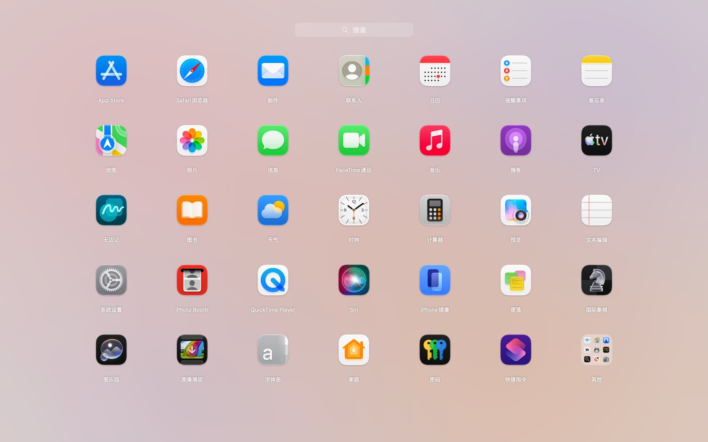
状态屏
Mac · 插件Windows
一键把所有屏幕盖上一块告示，同时拦住键盘和鼠标。擦屏幕、电脑在跑任务不想被人碰、离开座位时用。
- 自带「清洁屏幕」「请勿触碰」「马上回来」
- 告示的文字、图标、样式都能改，图标能挑任意系统表情；可以存好几个状态，按快捷键先选一个再进
- 按住 Esc 2 秒，或者用鼠标按住屏幕底部的提示退出
- 还可以加一道退出密码
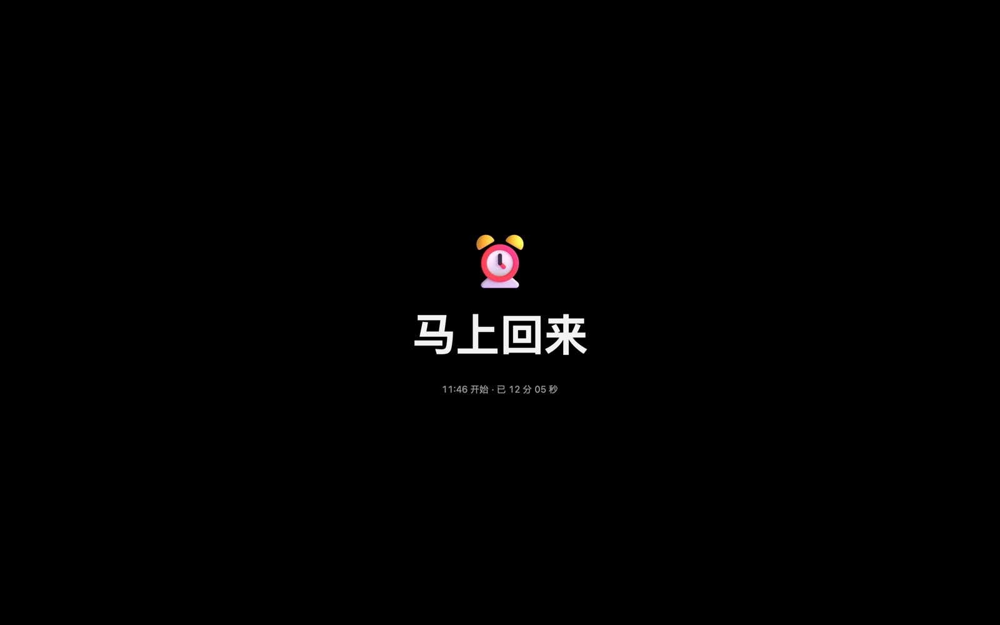
程序坞预览
仅 Mac插件
鼠标停在程序坞的 App 图标上，上方弹出它所有窗口的缩略图。
- 最小化的、隐藏的、在别的桌面上的窗口也列出来
- 点一张切过去；悬停时点 ✕ 关掉那扇窗
- 按 ⌘Tab 切换 App 时也弹预览；停多久再弹能调
- 要辅助功能授权，有屏幕录制授权才有缩略图
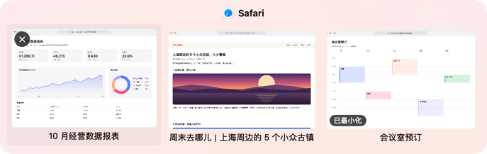
刘海岛
仅 Mac插件
复制好了、存好了、出错了，提示都从刘海里长出来，鼠标停上去展开看全文和按钮。这些一直都在；刘海岛插件再加上这些：
- 专注模式：打开、关掉、换模式时刘海两边出 2 秒，左边是模式的图标和名字，右边「开」或「关」；开着时刘海左边一直挂着它的图标。自己建的模式也认，不要任何授权
- 刘海两边的活动：录屏、录音时的计时，一小时内的提醒倒数，压缩、拷贝这类长任务的进度；没有刘海的屏挂在菜单栏上
- 正在播放：封面和跳动条挂在刘海两边，点开能拖进度、切歌、调音量，双指左右滑直接切歌；颜色能选封面色、强调色或白色，放「音乐」时点一颗心收藏这首（默认关）
- 下一个日程：开始前 10 分钟在刘海上倒数，视频会议一键加入；能用日历的颜色、只读选中的日历（默认关，要日历授权）
- 系统提示：接上电源、电量低、耳机连上时带着电量弹一下，音量键、亮度键的提示也能换到刘海上；低电量模式打开、关掉也说一声（默认关）
- 点一下刘海或两指往下滑，叫出一排快捷动作，能自己排、能关；还能列出最近的提示、显示这个月的日历
- 更多开关（都默认关）：整点报时、日程开始时响一声，截图录屏时不显示刘海岛，前台 App 全屏时藏起来，描一圈细边；提示停多久、停多久展开也能调
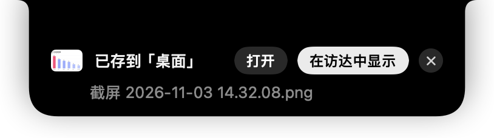
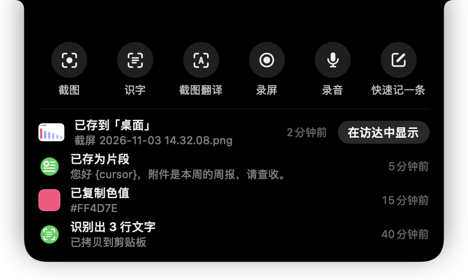
保持唤醒
Mac · 插件Windows · 插件
下载、演示、跑一晚上任务时，不让电脑睡着。
- 无限期、几小时，或者到某一刻；菜单栏、主界面、快捷键或启动器（「awake 2小时」「保持唤醒 到18点」）都能开
- 能连屏幕也不熄，或者只防系统睡眠、让屏幕照常熄
- 按时段自动开，比如工作日 9:00–18:00
- Mac 版手动开着时挂在刘海两边，点开能停
平滑滚动
仅 Mac插件
普通鼠标的滚轮也像触控板那样滑着滚。
- 滑多久、拨一格滚多远都能调
- 鼠标能单独反向（妙控鼠标也行），触控板不变
- 按住 ⌥ 临时不平滑，按住 ⇧ 左右滚
- 游戏、虚拟机、远程桌面里自动照原样，别的 App 也能加进停用名单；要辅助功能授权
App 快捷键
仅 Mac插件
在任何 App 里单独按住 ⌘ 一会儿，弹出它菜单里的全部快捷键，按菜单分组。
- 按哪个键能换成 ⌥ ⌃ ⇧，按多久（0.6–2 秒）能调；也能设一个快捷键打开
- 各栏连着排、快捷键对成一列，搜到的字标出来；系统的「移动与调整大小」收成一行，点开再看
- 弹出来后按着 ⌘ 再按住 ⇧ ⌥ ⌃ 或 🌐，只亮带这些键的快捷键
- 按着那个键再按别的键，这一下照常给 App
- 点一行直接执行；点一下搜索框能留住，打字搜（中文也认拼音）
- 要辅助功能授权
睡眠关蓝牙
仅 Mac插件MacBook
合上盖子睡下去时关掉蓝牙，放进包里不会被蓝牙鼠标、键盘弄醒。
- 醒来时只打开睡前自己关掉的蓝牙
- 接着外接显示器时不关，也能改成每次睡眠都关
- 添加时系统会问蓝牙授权
设置、同步与备份
MacWindows
外观、快捷键、各个功能的细节都在设置窗里，侧栏能搜设置项。
- 外观跟随系统，或固定浅色、深色；强调色可以自己挑
- 功能开关：用不上的功能整个关掉，它的入口、快捷键和后台工作一起停，打开立刻回来；Mac 版的便签、提醒、刘海岛、平滑滚动这些是插件，在 设置 › 全部插件 里添加，没添加的点进去先看能做什么、要什么授权
- Mac 版的界面有简体中文和 English，在 设置 › 通用「语言」里选，默认跟系统
- 全局快捷键都能改，也能设成连按两下某个修饰键；Mac 版能在指定的 App 里停用快捷键、把按键让给它；快捷键速查表按功能分类、能搜
- Mac 版的设置每页外面只放常用的，成组的点进下一页，不常改的收进「高级…」，细节点每一行右边的 ⓘ 看；搜索直接落到那一项，停在几项设置上能看到效果演示
- 同步：选一个同步盘文件夹（比如 iCloud 云盘），或者直接连 WebDAV 服务器，设置、片段和收藏、生词本、便签、提醒等在几台电脑之间同步，每类一个开关；密钥不同步。Mac 和 Windows 之间也能互通片段、收藏、生词本、网页搜索、翻译服务、便签和提醒
- 每天自动备份一份；设置与数据能导出成一个文件，再导入，Mac 版和 Windows 版导出的能互相导入
- 有新版本时菜单栏里提示，一键更新；Mac 版默认在后台下好、退出时装上，也能跳过某个版本
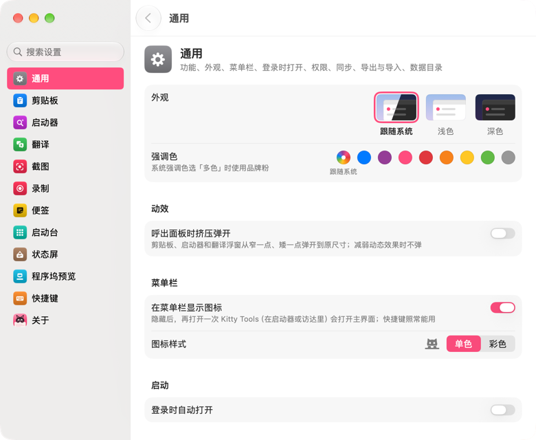
默认快捷键
都能在 设置 › 快捷键 里改。没列出来的（录音、截图历史、划词翻译并替换、新建便签、新建提醒、启动台、状态屏……）默认不设，需要时自己录一个。功能关着、插件没添加时它的快捷键不生效，Mac 版新装默认只开剪贴板、启动器、翻译、截图。
| 功能 | Mac | Windows |
|---|---|---|
| 剪贴板历史 | ⌥C | Alt+C |
| 启动器 | ⌥Space | Alt+Space |
| 划词翻译 | ⌥D | Alt+E |
| 输入翻译 | ⌥T | Alt+T |
| 截图翻译 | ⌥S | Alt+S |
| 截图 | ⌥A | Alt+X |
| 截取上次区域 | ⌥X | Ctrl+Alt+Z |
| 识字 | ⌥O | Alt+O |
| 录屏（再按一次停止） | ⌥R | Alt+R |
| 快速记一条（便签） | ⌥N | Alt+N |
macOS 15.0 和 15.1 不允许只带 ⌥ 的组合，在这两个版本上请改成带 ⌘ 或 ⌃ 的组合，快捷键页会提示。别的 App 在输密码时（系统开着安全输入），Mac 上只带 ⌥ 的字母、数字、符号快捷键按不出来，这是系统的规定；这时菜单栏图标会出一把橙色小锁，说是哪个 App 开着、怎么关。要在密码框里也能用，换成带 ⌃ 或 ⌘ 的组合，或连按两下修饰键（⌥Space 不受影响）。